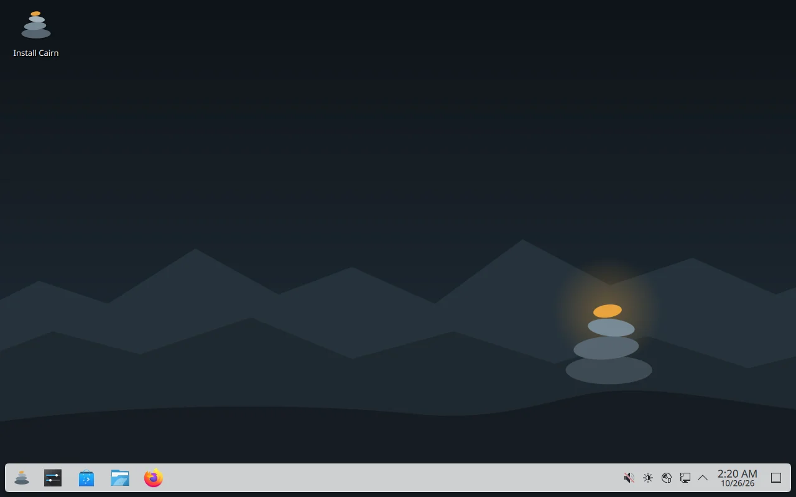
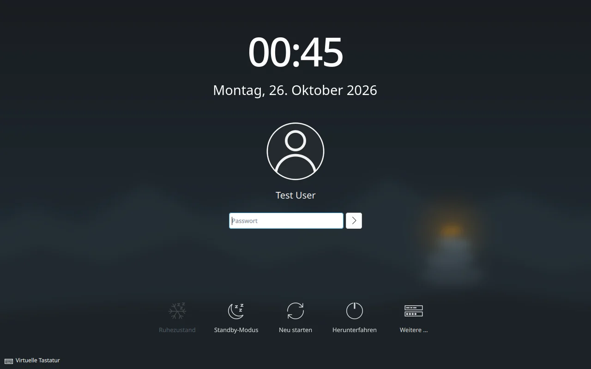
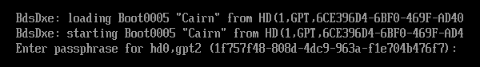

Why Cairn
A cairn is a stack of stones hikers build to mark a safe trail. Cairn Linux is Arch Linux with a delay built in, rollback ready if something goes wrong, and hardening switched on.
-
Stable, and still rolling
Cairn doesn't take packages the moment Arch publishes them.
cairn-updatemoves your system to a dated snapshot of the Arch repositories from 7 days earlier, so every package has spent a week in Arch first. Every Cairn machine on the same date has exactly the same packages, so partial upgrades can't happen.- Need a security fix today?
cairn-update --nowjumps to today's packages. - Before upgrading, it shows the Arch news posted since your current snapshot.
- Runs the LTS kernel (
linux-lts).
- Need a security fix today?
-
Hardened by default
The security work is done before you log in, and tuned so Flatpak, browser sandboxes and the NVIDIA driver still work.
- AppArmor enabled at boot, with about 160 profiles.
- An nftables firewall that drops unsolicited incoming connections.
- A hardened kernel command line and kernel sysctl settings.
- A locked root account; admin tasks go through
sudo. - Optional LUKS2 full-disk encryption, with
/bootinside it. - Privacy-minded networking: randomised Wi‑Fi MAC addresses and IPv6 privacy addresses.
See the details
Kernel command line:
lsm=landlock,lockdown,yama,integrity,apparmor,bpf slab_nomerge init_on_alloc=1 init_on_free=1 page_alloc.shuffle=1 randomize_kstack_offset=on vsyscall=none debugfs=offThe sysctl file (
/etc/sysctl.d/90-cairn-hardening.conf) hides kernel pointers and the kernel log, disables unprivileged BPF and kexec, restricts ptrace to a process's own children, adds symlink, hardlink and FIFO protections and more address-space randomisation, turns off ICMP redirects and source routing, and drops core dumps. Rare network protocols and obsolete filesystems can't be auto-loaded. Also installed:usbguard,sbctlfor Secure Boot keys,fwupdfor firmware updates andtpm2-tools.Left out on purpose: the
linux-hardenedkernel and disabling unprivileged user namespaces, because both break Flatpak and browser sandboxes. Kernel lockdown mode is also off, because it blocks the NVIDIA driver. -
A bad update is one reboot away from fixed
The system lives on btrfs.
snapperandsnap-pactake a snapshot before and after every package change, andgrub-btrfslists those snapshots in the boot menu. If an update breaks something, reboot, pick the snapshot from before it, and runsudo snapper rollbackto keep it.The installer also takes a "Fresh install" snapshot, so you can always get back to day one.
-
Your software, your desktop
You get all of the Arch repositories through
pacman, plus Flatpak with Flathub, browsable in Discover on KDE. Plasma is the default and installs offline; GNOME, XFCE, Cinnamon, MATE, Budgie, LXQt and COSMIC are one choice away in the installer. See the desktops.
- Memory
- About 570 MB at the login screen and about 950 MB with Plasma logged in. Swap lives in compressed RAM (zram).
- Graphics
- Intel and AMD through Mesa and Vulkan. NVIDIA GTX 16xx and newer through the open kernel driver; older NVIDIA cards use the installer's "nouveau" choice.
- Firmware
- Boots on UEFI and legacy BIOS. Firmware updates through
fwupd. - Everyday hardware
- Printing (CUPS), Bluetooth, and PipeWire audio work out of the box.
- Virtual machines
- Guest tools for VirtualBox, VMware, QEMU and Hyper‑V are included. Each one only starts on its own hypervisor.
- Software
- Every Arch repository, including multilib, plus Flathub. Firefox, Dolphin, Kate, Konsole and Okular come with Plasma.
Screenshots





Pick your desktop
Choose one in the installer. You can add others later with pacman.
KDE Plasma
The desktop on the live ISO, so it installs with no internet connection. Comes with Discover as the app store, plus Dolphin, Konsole, Kate, Okular, Gwenview, Spectacle and Firefox.
- GNOMEFocused, workflow-driven desktop
- XFCELight and traditional
- CinnamonFamiliar taskbar-and-menu layout
- MATEThe classic GNOME 2 layout
- BudgieSimple, modern panel desktop
- LXQtVery light, built on Qt
- COSMICSystem76's new desktop, written in Rust
These are downloaded from the Arch repositories during installation, so they need an internet connection.
Download
One ISO for every PC: it boots on UEFI and legacy BIOS, with drivers for Intel, AMD and NVIDIA graphics.
- Size
- about 2.4 GB
- Architecture
- x86_64
- Live desktop
- KDE Plasma
04131ce1cf6ff6bea1f8acf2a24e88a45dbae5deb05a484fd384b1db6fdd46c9On Windows, with Rufus
- Open Rufus, pick your USB stick and the Cairn ISO.
- Keep the partition scheme at GPT.
- Click Start. When Rufus says "ISOHybrid image detected", choose Write in DD Image mode. ISO mode won't boot.
Writing the stick erases everything on it.
On Linux, with dd
Find the stick's name first, then write to the whole device (/dev/sdX, not /dev/sdX1). This erases the stick.
lsblk
sudo dd if=cairn-2026.10.24-x86_64.iso of=/dev/sdX bs=4M status=progress oflag=syncCheck the download
# Linux, with the .sha256 file in the same folder
sha256sum -c cairn-2026.10.24-x86_64.iso.sha256
# Windows PowerShell: compare with the checksum above
Get-FileHash .\cairn-2026.10.24-x86_64.iso -Algorithm SHA256Turn off Secure Boot in your PC's firmware settings before booting the stick. The ISO isn't signed. Once Cairn is installed, you can sign it with your own keys using sbctl.
Getting started
-
Install
Boot from the USB stick and the Plasma live desktop starts. Double-click Install Cairn. The guided installer runs in a terminal window and asks for the disk, encryption, your user, time zone, language, keyboard, desktop and NVIDIA driver. It then copies the system to disk, sets up btrfs, zram swap and GRUB, and takes a "Fresh install" snapshot.
The installer uses the whole disk, so back up anything on it first.
-
Update with cairn-update
After the first boot, run
cairn-updateonce to download the package databases. After that, run it whenever you want to update.cairn-update # go to the snapshot from 7 days ago cairn-update --now # today's packages, for an urgent security fix cairn-update --status # which snapshot you're on cairn-update --news # Arch news since your snapshot -
Install apps
Open Discover to browse apps, including Flatpaks from Flathub. In a terminal, use
pacmanfor anything in the Arch repositories, orflatpakfor Flathub.sudo pacman -S gimp flatpak install flathub org.mozilla.Thunderbird -
Roll back a bad update
- Reboot, and open the snapshots entry in the GRUB menu.
- Pick the "pre" snapshot taken just before the update, and boot it.
- If everything works, make it permanent with
sudo snapper rollbackand reboot.
Run
snapper listat any time to see every snapshot and what took it.
Questions
How is Cairn different from Arch?
Cairn uses the same Arch packages. What changes is when you get them, what happens if one breaks, and what's set up before you log in.
| Arch Linux | Cairn Linux | |
|---|---|---|
| Packages | Arch repos | Same Arch repos, multilib, Flathub in Discover, AUR via base-devel |
| Updates | The moment they're published | A dated snapshot 7 days behind Arch |
| Kernel | linux | linux-lts |
| If an update breaks | Fix it by hand | Reboot, pick the pre-update snapshot in GRUB |
| Firewall | None | nftables: block inbound, allow outbound |
| Hardening | Defaults | AppArmor, sysctl and kernel command line hardening, module blacklist, no core dumps, locked root, MAC randomisation |
| Install | By hand | Guided installer, offline with Plasma, full-disk encryption |
| Desktop | None | KDE Plasma 6, or one of seven others |
Can I use the AUR?
Yes. base-devel is installed, so you can build AUR packages with makepkg or install the AUR helper you like. Cairn doesn't ship one.
The AUR follows current Arch, while your system is 7 days behind it. If an AUR package needs a newer library than your snapshot has, run cairn-update --now first, or wait for the next regular update.
How do updates work?
pacman doesn't read a live mirror. It reads the Arch Linux Archive for one fixed date. cairn-update moves that date forward to 7 days ago, so every package has spent a week in Arch first, and most breakage gets reported and fixed in that time.
Because the date is frozen, the whole system moves together: every Cairn machine on the same date has exactly the same packages, and pacman -Sy is safe here, unlike on Arch. Before upgrading, cairn-update prints the Arch news posted since your snapshot, which is where Arch announces any manual steps. Snapper takes a snapshot before and after the upgrade.
Package files download from fast regular Arch mirrors where possible. The package list always comes from the dated snapshot, and every package is signed, so a mirror can't change what you get. The lag is set by LAG_DAYS in /etc/cairn/update.conf.
Does that mean security fixes arrive late?
By default, yes, by 7 days. cairn-update warns you when there's Arch news newer than the date it's moving to. When a fix can't wait, cairn-update --now takes today's packages.
Can I dual-boot?
Not on the same disk. The installer always uses the whole disk. If another operating system is on a different disk, GRUB finds it and adds it to the boot menu.
Does Cairn work with Secure Boot?
Turn Secure Boot off to boot the ISO, because it isn't signed. sbctl is installed, so you can enroll your own keys and sign the installed system afterwards.